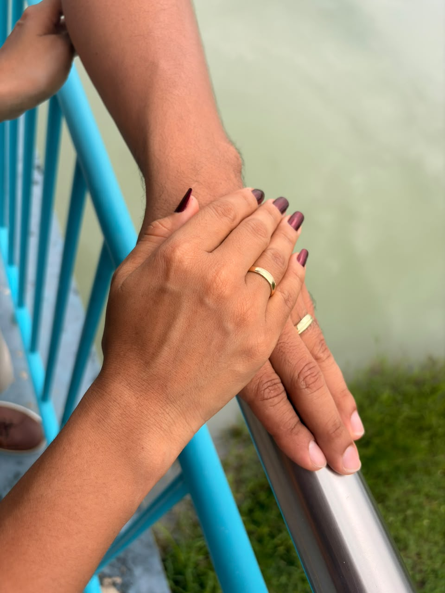
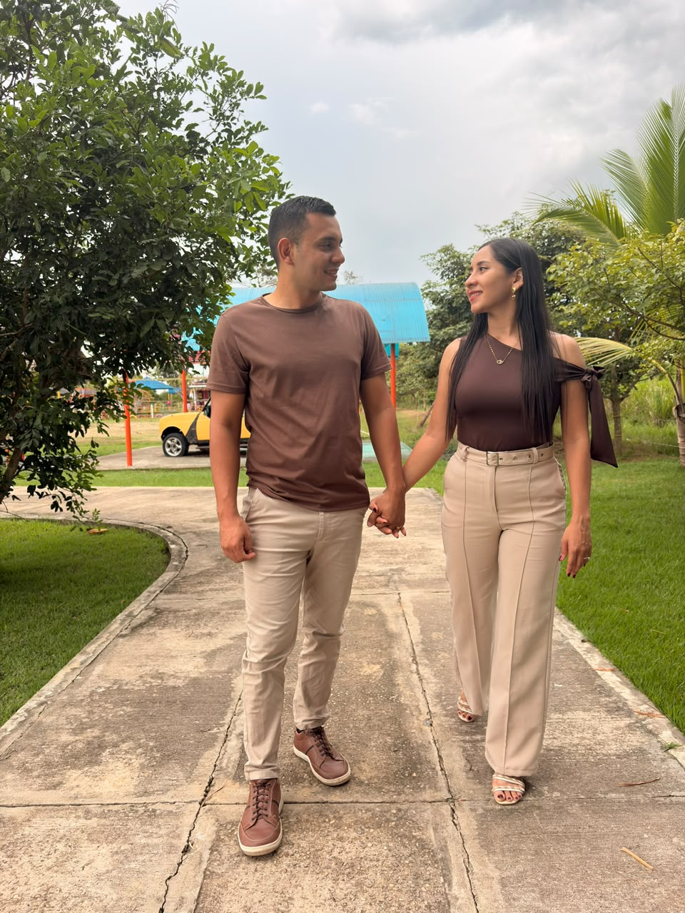

Estás cordialmente invitado
a la boda de
Queridos Amigos
Hemos reservado1lugar en tu honor
Tenemos el honor de
invitarte a nuestra boda
&
“Así que ya no son dos, sino una sola carne. Por tanto, lo que Dios ha unido, que no lo separe nadie”
Mateo 19:6
Dios hizo posible que nos encontráramos y decidió unirnos. Hoy celebramos el comienzo de nuestra vida juntos y queremos compartirlo contigo.
Presiona para escuchar
nuestra canción


Tu presencia en nuestra boda es el mejor regalo. Si deseas hacernos un obsequio, un aporte en efectivo sería muy apreciado por nosotros.
Durante la recepción tendremos un buzón de lluvia de sobres en una mesa especial, donde podrás depositar el tuyo.
Si bien amamos a los niños, este es un evento solo para adultos. Para mantener un ambiente tranquilo y cómodo durante la ceremonia y la recepción, te agradecemos no traer niños. Les agradecemos su comprensión.
Usa el celular en modo vibración para no interrumpir la ceremonia.
Llega a las 3:30 p. m. para tener tiempo de acomodarte en orden antes de la ceremonia.
Dentro de la finca hay un gran espacio de estacionamiento, con vigilancia, donde puedes dejar tu vehículo.